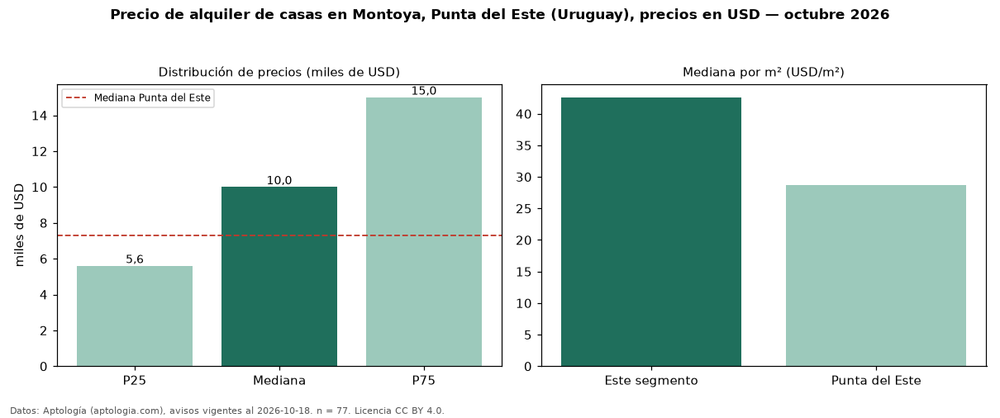

Precio de alquiler de casas en Montoya, Punta del Este (Uruguay), precios en USD — octubre 2026
USD 10.000 al mes es el canon mediano de casas en alquiler en Montoya, Punta del Este (Uruguay) (n = 77 avisos). Frente a la mediana de Punta del Este para casas (USD 7.300), queda 37 % por encima. Por metro cuadrado, la mediana es USD 42,60/m² al mes (n = 61 avisos con área), 48 % por encima de Punta del Este (USD 28,70/m²). La mitad central de los avisos va de USD 5.600 a USD 15.000 (razón 2,7), una dispersión alta. El área mediana anunciada es 220 m². El segmento con más oferta es el de 3 o más habitaciones (75 avisos, mediana USD 10.000). Por precio mediano es el puesto 3 de 11 barrios de Punta del Este con al menos 30 avisos de casas en alquiler (USD): en la franja media. Datos: Aptología (aptologia.com), CC BY 4.0 — https://www.aptologia.com/uy/alquiler/punta-del-este/montoya. Archivos: PDF, CSV con las cifras y gráfica PNG.

| Avisos únicos | 77 |
|---|---|
| Percentil 25 | COP 5.600 |
| Mediana | COP 10.000 |
| Percentil 75 | COP 15.000 |
| Mediana por m² | COP 42 |
Fuente: avisos vigentes de portales inmobiliarios recopilados por Aptología, deduplicados (mínimo 30 avisos únicos por celda). Precios pedidos, no cerrados. Fecha: 2026-10-18.